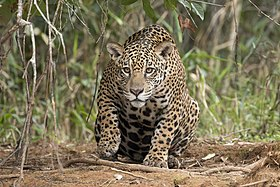
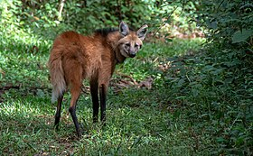

Historia da arara.
O termo arara designa várias aves psitaciformes de grande porte da tribo Arini, cauda longa e um bico curvado resistente. Geralmente, os gêneros comumente chamados de araras são os gêneros Ara, Anodorhynchus e Cyanopsitta.

Historia da onça pintada.
A onça-pintada (português brasileiro) ou jaguar (português europeu) (nome científico: Panthera onca), também conhecida como onça-preta (no caso dos indivíduos melânicos), é uma espécie de mamífero carnívoro da família dos felídeos (Felidae) encontrada nas Américas. É o terceiro maior felino do mundo, após o tigre e o leão, sendo o maior do continente americano. Apesar da semelhança com o leopardo (Panthera pardus), a onça-pintada é evolutivamente mais próxima do leão (Panthera leo). Ocorre desde o sul dos Estados Unidos até o norte da Argentina, mas está extinta em diversas partes dessa região atualmente. Nos Estados Unidos, por exemplo, está quase extinta desde o início do século XX, mas ainda ocorre em algumas áreas do Arizona, Novo México e Texas. É encontrada principalmente em ambientes de florestas tropicais, e geralmente não ocorre acima dos 1 200 m de altitude. A onça-pintada está fortemente associada à presença de água e é notável como um felino que gosta de nadar.
Historia do lobo-guará.
O lobo-guará (nome científico: Chrysocyon brachyurus), também chamado guará, aguará, aguaraçu, lobo-de-crina, lobo-de-juba e lobo-vermelho, é uma espécie de canídeo endêmico da América do Sul. Suas marcas lembram as de uma raposa-vermelha, mas não é uma raposa nem um lobo. É a única espécie do gênero Chrysocyon e provavelmente, a espécie vivente mais próxima é o cachorro-vinagre (Speothos venaticus). Ocorre em savanas e áreas abertas no centro do Brasil, Paraguai, Argentina e Bolívia, sendo um animal típico do Cerrado. Foi extinto em parte de sua ocorrência ao sul, mas ainda deve ocorrer no Uruguai. No dia 29 de julho de 2020 o lobo-guará foi escolhido para simbolizar a cédula de duzentos reais.
Historia do tamandua.
Tamandua é um gênero de mamíferos da família Myrmecophagidae. É um animal de aparência curiosa. Sua cabeça alongada, que se prolonga pelo focinho, parece um grande tubo. Por não possuir dentes, ele usa as fortes patas dianteiras, dotadas de grandes garras, para destruir formigueiros e cupinzeiros. Quando os insetos fogem, o tamanduá os captura com a língua fina e comprida.